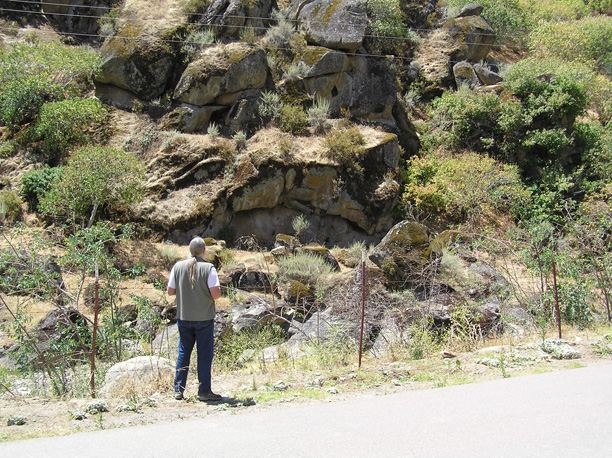
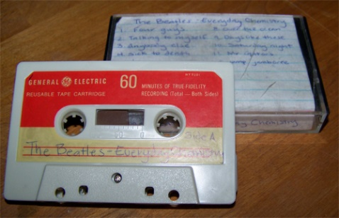
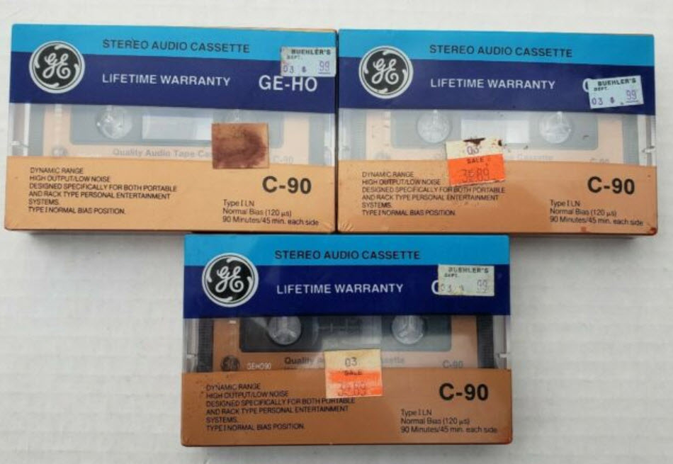
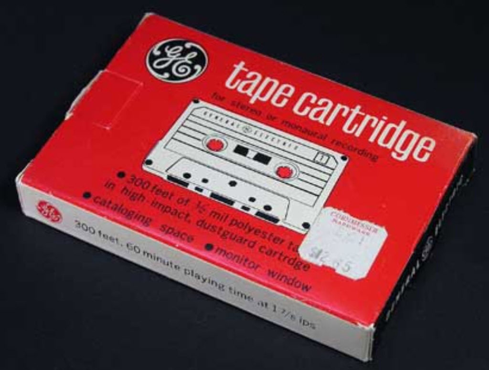

While many have attempted to recreate the famous stylings of The Beatles, none have been able to match Fab Four’s unique vibe that made them so revolutionary. But you don’t have to feel bad if you missed out on the ’60s—all you have to do is take a trip to an alternate universe where John Lennon and George Harrison never died and the group is still making music…
Introduction

A man who has adopted the pseudonym of James Richards claims he was chasing his dog through Del Puerto Canyon in California on September 9, 2009 when he tripped in a rabbit hole and knocked himself unconscious. Upon waking up, he found himself in a room next to an unrecognizable machine with a man who introduced himself as Jonas.
According to the strange man, while on a work-related trip for a dimensional travel agency, he had used the machine to transport the unconscious Richards to a parallel Earth in order to help him.
Of course, the logical thing to do in this situation was to start discussing pop culture, which led Jonas and Richards to the topic of The Beatles, a band both dimensions shared. To Richards’s surprise, in this alternate dimension, The Beatles were all alive and still creating music. Richards brought back a souvenir cassette tape entitled Everyday Chemistry that was composed of Beatles songs never released in our dimension, which he helpfully uploaded to his website.
Here is his story. Direct from his website.
The following is an actual account of my experiences as of recently. Because of the nature of what has happened I must remain anonymous until I feel it is safe to reveal my real name, but for now you can refer to me as James Richards. On Sept. 9, 2009 I experienced something that I still am having trouble believing happened to me. I came into the possession of a cassette tape containing a Beatles album that was never released. In fact, not only was it never released but it was recorded many years after they broke up (and no I'm not talking about Klaatu). Now this is where the story becomes slightly more unbelievable and it is almost embarrassing to attempt to explain the incident to you for fear of viewing me as completely absurd. I must assure you, I am not insane or on drugs, and hopefully the audio from this tape will be enough proof that there is more than we think out there... I live in Livermore California but on Sept 9 I was driving home from Turlock after visiting a friend for a few days. I had my dog with me and I didn't have any plans for the day so I decided to take a drive through a place called Del Puerto Canyon just west of Turlock. There is a scenic road that is a fun drive and actually goes through to Livermore. I hadn't taken a cruise through it for a while so I thought i would take this way home. It was about 2pm. A ways into the canyon my dog starting acting like she needed to use the restroom. So I pulled over to the first available parking area to the side of the road and let her out while I stretched. At first I didn't notice, but then I heard the barking from 30 yards away...my dog was chasing a rabbit. Now my dog is a pretty good dog but if she is chasing something then there is no stopping her so the only thing I could do was become part of the chase. They already had about a 40 yard head start so I had to really book it. The uneven ground and soft dirt patches made it difficult to run and it wasn't very far into the chase I had stepped in a rabbit hole, fell and knocked myself unconscious. When I woke up I was in a room with some furniture and electronics in it. I was taken care of with a bandage on my head but I still felt uneasy about the situation because where I fell and hit my head was in a very rural unpopulated area with no houses, and outside the window of the room I was in I could hear traffic. I wasn't near the window in the room, it was actually on the other side next to a unusual looking electronic machine that i didn't recognize from anywhere I've seen before. The only reason this stood out was because it seemed out of place in a person's home, which most of the room resembled. I decided to get up and look out the window but the door opened and in ran my dog, who was pretty excited to see me. When I looked up there was a man standing at the door. He was about 6 ft tall, had medium long black hair and was dressed casually nice but gave me a "greasy" vibe, if you know what I mean. He introduced himself as Jonas and asked me if I was ok, which I said yes. He said he found me unconscious in a field with my dog barking at me. So I thanked him for helping me and my dog out, and that I was surprised my dog even came back to me. I then asked him the question that would make me start wondering if I in fact had gone crazy... I asked him "where am I?". "About 20 feet away from where I found you" he replied. I told him that couldn't be possible because there were no houses within at least 20 miles from where I last remember being. He then told me that what he was going to say next will be very shocking and unbelievable, and that if he didn't actually experience it himself then he wouldn't believe it. He took a look at the machine near the window and looked back at me and said he transported me into parallel Earth. He said he traveled to our Earth dimension and found me knocked out in the blazing heat with nobody around to help me out. Normally he said he doesn't take outsiders through a portal but in my case he thought I needed urgent help.
I immediately started asking questions about traveling to parallel worlds, since all I knew about the topic was you tube videos of Michio Kaku. He told me to slow down and that he would explain himself. Apparently in his world a Parallel Travel machine can be purchased quite easily, while not cheap, its pretty popular even though the machine can be dangerous enough to cause death. In the 1950's of his dimension, the government was faced with the decision to continue to fund a space program (I'm guessing NASA) or a parallel dimension program called ARP-D (i can't remember what he said it stood for, I'm pretty sure the P-D is Parallel Dimensions, and i remember the acronym because I noticed it on a lot of the electronics in the room I was in.) He then explained that the real danger of using one of the machines was exploring new dimensions. Since there are an infinite amount of Earths in other dimensions, only a small amount have been explored.The problem with exploring unknown dimensions is the chance you will die somehow once you walk through the portal doorway. He told me that people die from falling (if the ground isn't close enough to where the portal opens), die from drowning (there are worlds covered in water, hard to reopen a portal underwater), die from fire, atmospheric issues...he said in order for people to avoid this they would have to know that there would be similar ground in the dimension they were traveling to. So his government began to research worlds that were "safe" to transport to, even creating public spots where people could choose a menu of worlds to go to that were all safe. Many of these worlds were lush vegetation worlds that were never ruined by man, only to be invaded by the large overcrowded population of the travelers world. He said something about new industries that opened up because of this, one of them being something like dimensional life brokers, these people offered the chance to live as someone new in an already established similar world that doesn't know of dimensional travel, nor that there are people crossing the dimensional border to. Jonas said he was an explorer for one of the dimensional travel agencies and was looking in new uncharted dimensions and came up my Earth. We talked about a lot of things, it was interesting to see what similarities and differences we had between worlds. Foods, culture, TV, technology... we covered a lot. We also started talking about music, which was an interesting topic because there were many of the same bands between our worlds that existed, including The Beatles. When their name got brought up Jonas mentioned that his brother just got back from seeing them perform at a concert recently, which I gave a weird look to and said "you mean they are still together?", and he said yea. I then told him about how they broke up in our world and that John & George passed away, apparently in his world they are all alive, healthy and on tour still. Jonas then had me follow him into another room that had a bookshelf looking thing with some cassette tapes (yes the music ones, apparently CD's never caught on in his world) and a tape player/radio/record player, though it didn't quite look like the type of radio's we have, the speakers looked more like crinkled cardboard but sounded pretty good. I didn't get too good of a look at the speakers but they certainly weren't round, they almost looked like a tall accordion. The only Beatles album he had that was store bought and had real cover art was Sgt Peppers, which the cover looked slightly different then the one we have, but the songs were all the same. The other 6 Beatles tapes he had were all like somebody recorded them onto a blank cassette for him and wrote the song titles on a card slipped in the case. A couple of the album titles written on the tapes I recognized but there were about 4 that I had never heard of before. He played a few songs from one of them, which was totally surreal to hear Beatles music that was never made (at least in our world). We talked about it a little bit, he said a girl made the tapes for him while he was in upper school (what they call high school). She was a huge fan of them and wanted him to listen to them. He popped out the first tape and was putting in the second one when I told him he should record me a copy of one so I could take it back with me, thinking it wouldn't be a big deal. Well the look Jonas gave me when I said this is part of the reason I am remaining anonymous. Not only did it sort of scare me but it had a very serious almost creepy look to it followed by the phrase (not word for word, i can't remember what he exactly said) "No, you are not to take anything with you back to your world. No pictures, no souvenirs, no tapes, NOTHING." I asked him why and he wouldn't really say except that for my safety I wasn't to take anything back.

Of course I am not the type of person to go through all of this parallel world stuff and not grab something to prove the outrageous story of my experience. So for the moment I told him I wouldn't take anything and changed the subject. About an hour later after some more talking I heard a doorbell ring and he left the room to check the door. I knew that I may not have another chance to take something so I grabbed one of the tapes and put it in my pocket, and then shuffled the tapes around to make it look less obvious that something was missing. When he came back inside I said I was kind of hungry (to just get us out of the room, i mixed the tapes up a little so it was hard to tell one was missing but I didn't want to be there when he found out), so he then took me in the other room and fed me. For the most part the food tasted like ours but was different product names and colors. The purple ketchup was the strangest. We talked a little bit more and then I expressed the notion that I should be going because it was getting late (the time of day was identical to ours, as is all worlds). We went back in the room with the machines in it, I grabbed my dog and shook Jonas' hand for taking care of me after I was knocked out. I thanked him again and stepped through the portal (which felt like getting wet but staying dry the entire time, really weird... when i put my dog on the ground she even shook herself like she thought she was wet). Back in our world I could see my car on the road still and there was straight line burn mark on the ground from where the portal had shown up. It was dark outside and the only reason I noticed the burn was because it was still smoking from the heat. I walked back to my car (didn't run this time) and drove home. The worst part was I couldn't even listen to the tape on the way home because I didn't have a tape player in my car. I actually wasn't even able to listen to it at home either for the same reason and had to go to Wal-mart to buy a tape player just to listen to it. Unfortunately I don't have any information about the tape other than what is written on the card sleeve. The track names were written, as well as the album title "Everyday Chemistry" . Everything else about it is as mysterious to you as it is to me. It also wasn't like I could have asked the guy anything about it, especially after taking it from him. I'll post some more about my experience in the coming days, but I have to go to work right now and this post is already long enough. If anyone has any questions they want to ask me about this incident then I've set up an email address that you can contact me at: thebeatlesneverbrokeup@yahoo.com. I'll try and answer every one's questions as best as possible. Lastly, if there is ANYONE out there that has experienced anything like this then please contact me, some of the things this guy said to me almost make me wonder if this isn't the first time dimensional travelers have been here. - James Richards
Wikipedia Entry
Everyday Chemistry is a remix album of unknown authorship that was made available as a free digital download on September 9, 2009. It mashes up various songs from the Beatles‘ individual solo careers, intending to present an album that the members would have recorded had they not broken up.
Links
- “Transdimensional thief claims to be in possession of unreleased Beatles album”
- “‘Everyday Chemistry’, the Beatles”
Commentary
I argue that the MWI is quite real, and that it is exploited by others for the purposes of [1] geographical-transportation, [2] research, [3] technological advancement, and [4] sentience migration.
I know nothing about the validity of what this fellow writes about except that;
- The feeling that you are covered in water and wet while dry is something ONLY a person who has gone through a portal would know about.
- The portal creates an invisible line that you walk through. This again is something that only an actual traveler would know about.
Curiously, I read a post where an audiophile listened to the tape and stated that while the music was a mix-up tape, the song elements used were not directly pulled from the existing albums. That they were custom made in a studio. You can believe him or not. I just throw this out for consideration.
Finally, there is a great deal of discussion on whether or not the actual recording is of the Beatles. No one is actually thinking about the actual cassette tape that the music was recorded upon. I am now arguing that the cassette tape is different. It does not look like anything on this world line.
In this world-line GE cassette tapes looked something along these lines…
And more examples…

And…

As far as I can see, the cassette tape design, as brought back by the accidental dimensional traveler does not in any way resemble any GE cassette on this world-line.
- The label is different.
- The texture on the plastic is different.
- The cassette is held by chemical or ultrasonic bonding, not screws.
- The color, the logo, the fonts are all the same.
Conclusion
A man hurt himself while walking. He was rescued by a man who was surfing the MWI and taken to his house where a large machine was located. This machine was fixed and created MWI portals for egress and exploration.
He returned home with a souvenir; which was a Beatles music tape.
It’s seemingly easy to disprove the music as it is a studio mix. Harder still, to disprove the cassette tape itself.
Take Aways
- Other people have experiences with the MWI.
- They are rarely believed.
- The unifying commonality of their experiences can be used to determine whether or not they are relaying actual events or transcribing fictional ones.
FAQ
Q: Did this even actually occur?
A: I do not know. What I do know is that the MWI exists. I also know that others use the MWI to enter various realities of but ours is one such reality. It is possible that this story is genuine because he accurately describes the feelings and impressions of one going through a dimensional portal.
Q: What does he mean that the person felt “greasy”?
A: I have no idea at all.
Q: What can we learn from this story?
A: Others have experienced the MWI. It gives us an insight into the lives of those who live in different elements of our reality. We can imagine what their lives might be like and how the differences can manifest. We can also accept the knowledge that no one will believe your story simply because it is outside of the accepted bubble of normalcy.